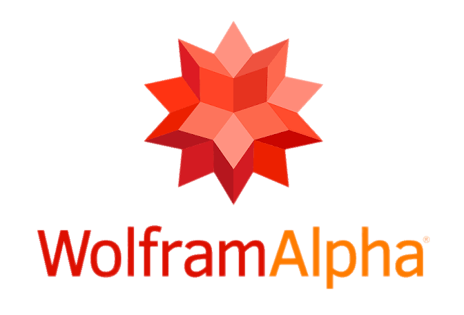
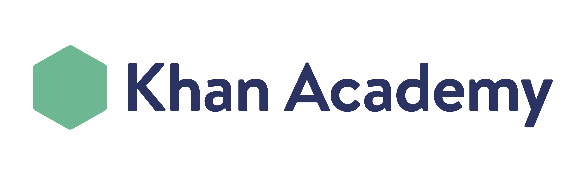
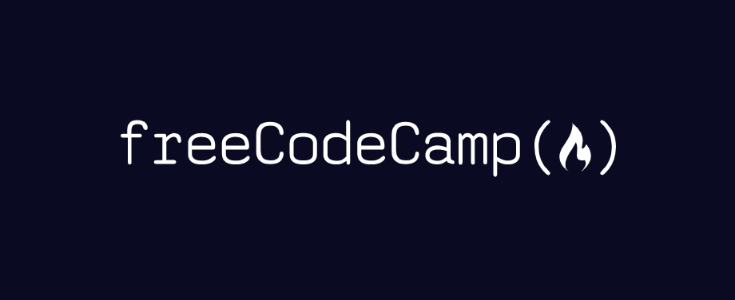

LeetCode

Comecei a usar essa plataforma de desafios de programação para me preparar para o mercado de trabalho, o nível de dificuldade é alto, porém é o padrão do mercado de trabalho.
Antonio Wenceslau de Freitas

É uma ferramenta de conhecimento computacional, tem me ajudado bastante nas matérias de cálculo.

Uma das melhores plataformas de estudo em geral, utilizo principalmente quando preciso revisitar algum conceito que já esqueci do ensino médio.
Comecei a usar essa plataforma de desafios de programação para me preparar para o mercado de trabalho, o nível de dificuldade é alto, porém é o padrão do mercado de trabalho.

Recomendo a todos essa plataforma de estudos para quem busca começar do zero, até hoje não encontrei nada parecido que seja gratuíto.
Bem parecido com a plataforma LeetCode, porém sinto que o nível de dificuldade é um pouco mais tranquilo no começo e sua estrutura me aparenta ser um pouco mais organizada e agradável.
Eu não tenho um logo, e esse site é bem básico, fiz com a inteção dele poder ser aberto na maior quantidade de dispositivos possíveis, tenho uma sessão educacional nele que faz parte do meu maior projeto, porém que eu tenho deixado de lado recentemente simplesmente pelo motivo de não dispor de tempo para dedicar a ele. Nele eu comecei a escrever uma série de "cursinhos" que futuramente pretendo transformar em um livro, como uma forma de introduzir as pessoas ao mundo da programação.